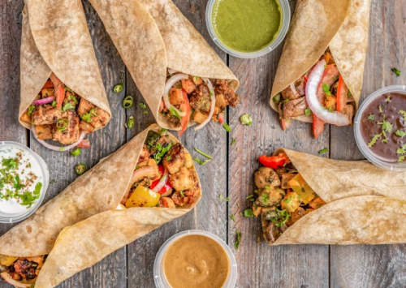

index
Les_12_meilleurs_gastronomie_du_monde
Types
La_cuisine_Libanaise
dessert
About_me
On distingue plusieurs cuisine parmis le monde mais les 12 meilleurs sont:
Cuisine Italienne:
l’Italie se sent comme la bonne culture alimentaire pour s’asseoir au premier rang. Ils se soucient autant de la nourriture que la France, ils sont aussi variés que l’Inde, et leur cuisine est aussi passionnante que celle de l’Espagne.
Cuisine Francaise:
La France est un pays qui se soucie profondément de la nourriture et cela se voit dans chaque repas, chaque ingrédient et chaque style. La cuisine française, c’est manger la meilleure nourriture pour le plaisir et profiter pleinement de la générosité – la nourriture n’est qu’un avantage accessoire.
Cuisine Indienne:
Les cultures alimentaires en Inde sont très variées. Les Tajines de viande du Nord islamique sont totalement différents des assiettes de légumes Tamal que l’on trouve dans le Sud-est hindou. Et c’est avant même que vous ne commenciez à fouiller dans les différentes grandes villes et leurs scènes phénoménales de nourriture de rue.
Cuisine Espagnole:
L’Espagne dans le top cinq, c’est logique si l’on ne considère que le beurre de gland du Jamon Iberico.
Cuisine Grècque:
La nourriture grecque est l’évolution continue du partage de la culture alimentaire.
Cuisine Mexiquaine:
Comme en Chine, les cultures alimentaires du Mexique sont très variées. Ces cultures culinaires sont profondément ancrées dans les habitudes alimentaires indigènes transmises depuis des millénaires, ce qui fait de la cuisine pan-mexicaine l’une des meilleures qu’il y ait.

Cuisine Japonaise:
Le Japon est, cependant, un autre endroit qui varie grandement.
Cuisine Chinoise:
La Chine est vaste. Des sommets de l’Himalaya aux déserts du nord en passant par les vastes prairies qui cèdent la place aux montagnes luxuriantes qui s’écrasent sur la côte escarpée de l’océan Pacifique. Avec tout ce terrain vient une pléthore de cuisines, ce qui fait de la Chine un endroit fantastique pour manger un repas différent chaque jour et ne jamais s’ennuyer.
Cuisine Thaïlandaise:
La Thaïlande s’est imposée sur la scène internationale comme l’une des grandes cuisines
Cuisine du Pérou:
Depuis 2012, le Pérou est régulièrement lauréat des World Travel Awards dans la catégorie des meilleures destinations gastronomiques au monde
Cuisine Libanaise:
Le Liban fait partie des destinations les plus réputées au monde pour faire bonne chère. Variée, fraîche, délicate, la cuisine libanaise mêle beaucoup de fruits et légumes, de laitages et de céréales. L’agneau y occupe aussi une place de choix. Les assortiments de mezzés sont parfaits pour éveiller son palais à toutes les subtilités culinaires : taboulé, houmous, labneh, falafels, moussaka… Les assiettes sont colorées et très appétissantes ! Surtout, essayez de vous attabler en ayant faim : les repas s’avèrent très copieux dans les restaurants libanais.
Cuisine Allemand:
C’est un pays où la nourriture est importante, les produits locaux, les produits saisonniers et l’innovation triomphent, ce qui en fait l’une des scènes culinaires les plus branchées à l’heure actuelle.